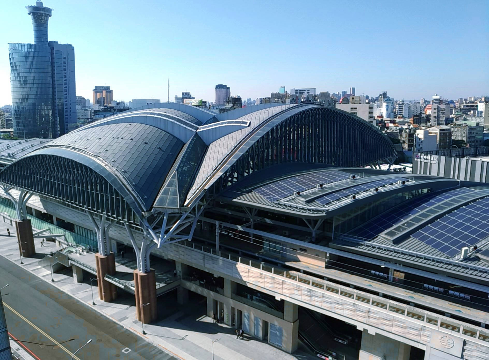
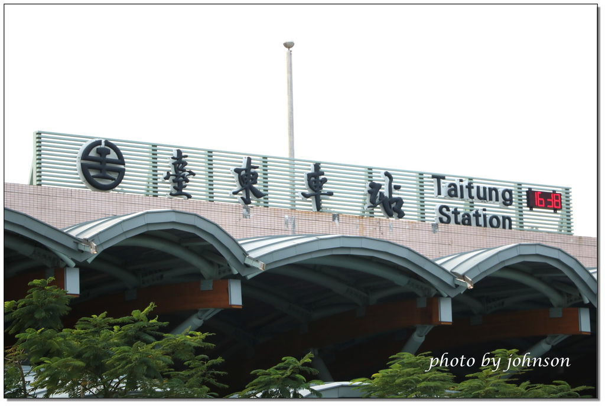

景點推薦
台南自由行 |
台南是我除了宜蘭之外最喜歡的台灣城市，有很大一部分的原因就是它濃濃的台灣味與歷史感還有便宜又好吃的美食們，每年我都會去一趟台南，去著去著也就忘記有機會把我所知道的整理成一篇台南自由行攻略文，在此獻給大家！ |
|  台中自由行 |
台中景點有哪些？台中位於台灣的核心地帶，南來北往相當方便，是遊人最適合兩天一夜旅遊的目的地。台中景點除了歌劇院、秋紅谷還有哪裡可以去呢？以下將為你介紹Klook精選台中景點，讓大家放進自己的旅遊清單。從台中山線出發一路玩到台中海線，各式景點一個都不放過，趕緊跟著隨著台中各鄉鎮地圖，來場台中人文、自然、娛樂、文化的邂逅輕旅行。 |
| 台北自由行 |
台灣哪裡最能一直玩？來台北旅遊就對了！台北是一個融合傳統及現代文化的不夜城，生活機能包羅萬象，大眾交通運輸也便利。若想要在台北旅遊，最聰明的台北自由行玩法就是搭乘捷運遊玩所有台北景點。AsiaYo 不但幫你精選出台北自由行必玩的台北景點，也精選出 Top 20 間適合輕旅行的台北住宿及台北民宿，讓你輕鬆享受台北自由行！ |
|  台東自由行 |
台東，台灣後山最難抵達的地方之一，說想去台東已經好幾年的我，終於在今年踏上了這片土地，有著沈文程唱的鳳梨釋迦柴魚～好吃一大盤，洛神花紅茶～清涼透心肝，每年八九月的台東還有著熱氣球嘉年華和金針花，第一次去就待了七天六夜，待足待滿！ |
 離島自由行 |
台灣周邊有許多特殊地形的美麗離島：蘭嶼、綠島、澎湖、金門、小琉球等等，無論你是想玩水上活動、看古蹟、體驗原住民文化、定吃當地美食，這些島嶼都能滿足你的度假享受。這篇台灣離島旅遊攻略，整理了6大熱門旅遊外島，告訴你這些離島的景點交通全攻略，懶人必看。 |